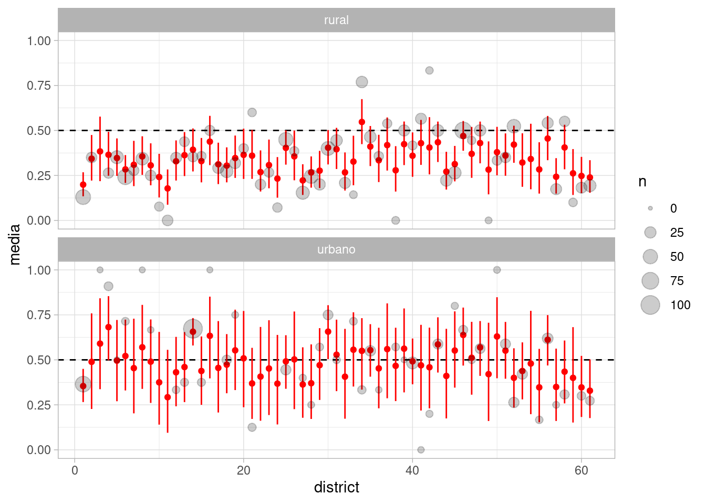

Código
library(tidyverse)
library(kableExtra)
library(DiagrammeR)
ggplot2::theme_set(ggplot2::theme_light())Muchas veces, cuando las observaciones están agrupadas por variables categóricas, puede ser que obtengamos mejores estimaciones cuando consideramos modelos no solo para los observaciones, sino también para la variación que esperamos en parámetros relacionadas con los grupos. Esta es una técnica de modelación con la que en muchos casos podemos mejorar estimaciones, aprovechando de manera más eficiente la información que tenemos.
En nuestros ejemplos anteriores, por ejemplo, hemos visto casos donde al estratificar construimos modelos individuales, por ejemplo, en regresión lineal, si \(g(i)\) es el grupo de la observación \(i\), utilizamos modelos de la forma:
\[\alpha_{g(i)} + \beta_{g(i)} x_i + \epsilon_i\] Este modelo, donde ordenada al origen y coeficientes varían por grupo, tienen a veces el problema de resultar en estimaciones con alta variabilidad y poco informativas, especialmente cuando tenemos pocos datos por grupo. Cuando es el caso de que estos coeficientes no varían por grupo, podemos adoptar un modelo más simple, como \[\alpha + \beta x_i + \epsilon_i,\] que da estimaciones con menos error, pero perdemos el objetivo de la estratificación a menos que en efecto los coeficientes no varían mucho por grupo.
Una alternativa intermedia es construir un modelo donde aprendamos la estructura de variabilidad de \(\alpha_g\) y \(\beta_g\) a lo largo de los grupos: aprendemos de cada grupo, pero los coeficientes de cada grupo tienen una distribución a priori con parámetros que podemos aprender de los datos. Esto resulta en varias mejorías:
El objetivo de todo esto es obtener mejores estimaciones de las cantidades de interés. Veremos más adelante cómo se relaciona esto con inferencia causal.
Consideramos un ejemplo simple, donde queremos estimar el efecto del hospital en la tasa de mortalidad de pacientes de cirugía de corazón. Este ejemplo se puede encontrar en Albert (2009). Plantearemos 3 alternativas de modelación para resolver el problema: modelo de unidades iguales, modelo de unidades independientes y finalmente modelo jerárquico.
Tenemos datos todas las cirugías de transplante de corazón llevadas a cabo en Estados Unidos en un periodo de 24 meses, entre octubre de 1987 y diciembre de 1989. Para cada uno de los 131 hospitales, se registró el número de cirugías de transplante de corazón, y el número de muertes durante los 30 días posteriores a la cirugía \(y\). Además, se cuenta con una predicción de la probabilidad de muerte de cada paciente individual. Esta predicción esta basada en un modelo logístico que incluye información a nivel paciente como condición médica antes de la cirugía, género, sexo y raza. En cada hospital se suman las probabilidades de muerte de sus pacientes para calcular el número esperado de muertes \(e\), que llamamos como la exposición del hospital. \(e\) refleja el riesgo de muerte debido a la mezcla de pacientes que componen un hospital particular.
El diagrama simple que consideraremos es uno donde hospital es causa tanto de su exposición \(e\) (por su tamaño, tipo de casos que atrae, etc), como de el número de personas fallecidas. A su vez, la exposición \(e\) es causa del número de muertes \(y\). Nos interesa estimar el efecto directo de hospital en el número de muertes.
library(tidyverse)
library(kableExtra)
library(DiagrammeR)
ggplot2::theme_set(ggplot2::theme_light())datos_hosp <- read_csv("../datos/hearttransplants.csv") |>
mutate(hospital = row_number())
head(datos_hosp)# A tibble: 6 × 3
e y hospital
<dbl> <dbl> <int>
1 532 0 1
2 584 0 2
3 672 2 3
4 722 1 4
5 904 1 5
6 1236 0 6Consideramos la cantidad \(y/e\) como una estimación cruda de la tasa de mortalidad. En la siguiente gráfica, observamos que parece ser la variabilidad es alta cuando el número de expuestos es relativamente baja. Nótese que la tasa de mortalidad no es muy alta en general, y que el número de muertes es relativamente bajo en muchos hospitales (puede tomar valores 0, 1, 2, etc.) Esto produce variabilidad alta para exposiciones bajas.
ggplot(datos_hosp, aes(x = e, y = 1000 * y / e, color = log(1 + y))) +
geom_point() + scale_x_log10() + xlab("Número de expuestos e")Consideramos primero un modelo donde consideramos que todos los hospitales tienen una misma tasa de mortalidad. Si \(e_j\) es la exposición del hospital \(j\) y \(y_j\) el número de muertes, entonces podemos considerar un modelo de la forma
\[y_j \sim \text{Poisson}(e_j \lambda),\] Es decir, el número de muertes es Poisson con valor esperado igual al número de expuestos multiplicado por la tasa común de mortalidad.
library(cmdstanr)
mod_agregado <- cmdstan_model("./src/heart-agregado.stan")
datos_agregado <- list(N = nrow(datos_hosp), y = datos_hosp$y, e = datos_hosp$e)
ajuste_agregado <- mod_agregado$sample(data = datos_agregado, chains = 4, refresh = 1000)Running MCMC with 4 sequential chains...
Chain 1 Iteration: 1 / 2000 [ 0%] (Warmup)
Chain 1 Iteration: 1000 / 2000 [ 50%] (Warmup)
Chain 1 Iteration: 1001 / 2000 [ 50%] (Sampling)
Chain 1 Iteration: 2000 / 2000 [100%] (Sampling)
Chain 1 finished in 0.1 seconds.
Chain 2 Iteration: 1 / 2000 [ 0%] (Warmup)
Chain 2 Iteration: 1000 / 2000 [ 50%] (Warmup)
Chain 2 Iteration: 1001 / 2000 [ 50%] (Sampling)
Chain 2 Iteration: 2000 / 2000 [100%] (Sampling)
Chain 2 finished in 0.1 seconds.
Chain 3 Iteration: 1 / 2000 [ 0%] (Warmup)
Chain 3 Iteration: 1000 / 2000 [ 50%] (Warmup)
Chain 3 Iteration: 1001 / 2000 [ 50%] (Sampling)
Chain 3 Iteration: 2000 / 2000 [100%] (Sampling)
Chain 3 finished in 0.1 seconds.
Chain 4 Iteration: 1 / 2000 [ 0%] (Warmup)
Chain 4 Iteration: 1000 / 2000 [ 50%] (Warmup)
Chain 4 Iteration: 1001 / 2000 [ 50%] (Sampling)
Chain 4 Iteration: 2000 / 2000 [100%] (Sampling)
Chain 4 finished in 0.1 seconds.
All 4 chains finished successfully.
Mean chain execution time: 0.1 seconds.
Total execution time: 0.7 seconds.ajuste_agregado$summary("lambda")# A tibble: 1 × 10
variable mean median sd mad q5 q95 rhat ess_bulk ess_tail
<chr> <dbl> <dbl> <dbl> <dbl> <dbl> <dbl> <dbl> <dbl> <dbl>
1 lambda 0.941 0.940 0.0580 0.0570 0.849 1.04 1.00 1310. 1696.Los diagnósticos básicos parecen ser apropiados. Procedemos a hacer un chequeo predictivo posterior:
set.seed(912)
ajuste_agregado$draws("y_sim", format = "df") |>
as_tibble() |>
pivot_longer(cols = starts_with("y_sim"), names_to = "variable") |>
separate(variable, into = c("variable", "hospital"), sep = "[\\[\\]]") |>
mutate(hospital = as.integer(hospital)) |>
left_join(datos_hosp, by = "hospital") |>
filter(hospital %in% sample(1:94, 20)) |>
ggplot(aes(x = value)) + geom_histogram(binwidth = 1) +
facet_wrap(~ hospital) +
geom_vline(aes(xintercept = y), color = "red")
Y vemos fallas en el ajuste del modelo, con varias observaciones en los extremos de las colas.
Podemos considerar un modelo donde cada hospital tiene su propia tasa de mortalidad.
library(cmdstanr)
mod_ind <- cmdstan_model("./src/heart-individual.stan")
print(mod_ind)data {
int<lower=0> N;
array[N] int e;
array[N] int y;
}
parameters {
vector<lower=0>[N] lambda;
}
transformed parameters {
vector[N] media_hospital;
// lambda es por cada 1000 expuestos:
for (i in 1:N){
media_hospital[i] = lambda[i] * e[i] / 1000;
}
}
model {
// partes no determinísticas
y ~ poisson(media_hospital);
lambda ~ exponential(1);
}
generated quantities {
array[N] int y_sim;
for (i in 1:N){
y_sim[i] = poisson_rng(media_hospital[i]);
}
}datos_ind <- list(N = nrow(datos_hosp), y = datos_hosp$y, e = datos_hosp$e)
ajuste_ind <- mod_ind$sample(data = datos_ind, chains = 4, refresh = 1000)Running MCMC with 4 sequential chains...
Chain 1 Iteration: 1 / 2000 [ 0%] (Warmup)
Chain 1 Iteration: 1000 / 2000 [ 50%] (Warmup)
Chain 1 Iteration: 1001 / 2000 [ 50%] (Sampling)
Chain 1 Iteration: 2000 / 2000 [100%] (Sampling)
Chain 1 finished in 0.3 seconds.
Chain 2 Iteration: 1 / 2000 [ 0%] (Warmup)
Chain 2 Iteration: 1000 / 2000 [ 50%] (Warmup)
Chain 2 Iteration: 1001 / 2000 [ 50%] (Sampling)
Chain 2 Iteration: 2000 / 2000 [100%] (Sampling)
Chain 2 finished in 0.3 seconds.
Chain 3 Iteration: 1 / 2000 [ 0%] (Warmup)
Chain 3 Iteration: 1000 / 2000 [ 50%] (Warmup)
Chain 3 Iteration: 1001 / 2000 [ 50%] (Sampling)
Chain 3 Iteration: 2000 / 2000 [100%] (Sampling)
Chain 3 finished in 0.3 seconds.
Chain 4 Iteration: 1 / 2000 [ 0%] (Warmup)
Chain 4 Iteration: 1000 / 2000 [ 50%] (Warmup)
Chain 4 Iteration: 1001 / 2000 [ 50%] (Sampling)
Chain 4 Iteration: 2000 / 2000 [100%] (Sampling)
Chain 4 finished in 0.3 seconds.
All 4 chains finished successfully.
Mean chain execution time: 0.3 seconds.
Total execution time: 1.3 seconds.resumen <- ajuste_ind$summary("lambda") |>
select(variable, mean, sd, rhat, ess_bulk)
resumen |> kable()| variable | mean | sd | rhat | ess_bulk |
|---|---|---|---|---|
| lambda[1] | 0.6583536 | 0.6586216 | 1.0006192 | 5165.406 |
| lambda[2] | 0.6275285 | 0.6100568 | 1.0006134 | 5304.057 |
| lambda[3] | 1.7901338 | 1.0150032 | 1.0025797 | 7752.468 |
| lambda[4] | 1.1631030 | 0.8126933 | 1.0029684 | 6266.203 |
| lambda[5] | 1.0546849 | 0.7280221 | 1.0031314 | 7189.272 |
| lambda[6] | 0.4379974 | 0.4299703 | 1.0009799 | 5048.264 |
| lambda[7] | 0.4997928 | 0.4831605 | 1.0016690 | 5114.259 |
| lambda[8] | 0.8132338 | 0.5780811 | 1.0020729 | 7136.650 |
| lambda[9] | 2.2283861 | 1.1061633 | 0.9995477 | 7795.995 |
| lambda[10] | 0.4943771 | 0.4791999 | 1.0015410 | 6199.135 |
| lambda[11] | 0.5702635 | 0.5669676 | 0.9999858 | 4844.867 |
| lambda[12] | 0.7276062 | 0.5194843 | 0.9996745 | 7401.780 |
| lambda[13] | 0.5402685 | 0.5416521 | 1.0009094 | 4667.626 |
| lambda[14] | 1.4168025 | 0.8179681 | 1.0001357 | 8158.471 |
| lambda[15] | 1.8374637 | 0.8959153 | 1.0003162 | 7266.626 |
| lambda[16] | 0.4686611 | 0.4580127 | 1.0018647 | 5925.258 |
| lambda[17] | 0.4299892 | 0.4270344 | 1.0000900 | 4716.068 |
| lambda[18] | 1.4398167 | 0.7206289 | 1.0014807 | 7010.188 |
| lambda[19] | 0.4361010 | 0.3004024 | 1.0020841 | 7361.362 |
| lambda[20] | 0.9095600 | 0.6463542 | 0.9999059 | 6731.727 |
| lambda[21] | 0.8950893 | 0.6226518 | 1.0012198 | 7102.283 |
| lambda[22] | 0.9026263 | 0.6513811 | 1.0023325 | 7832.570 |
| lambda[23] | 2.0032715 | 0.9300883 | 1.0002577 | 8627.692 |
| lambda[24] | 1.5902697 | 0.8109377 | 1.0013903 | 8360.192 |
| lambda[25] | 1.3937997 | 0.6810875 | 1.0001507 | 7706.375 |
| lambda[26] | 0.6984656 | 0.5001702 | 0.9999789 | 6761.789 |
| lambda[27] | 0.4461970 | 0.4635060 | 1.0008701 | 6028.760 |
| lambda[28] | 1.2594830 | 0.6986847 | 1.0012426 | 7572.902 |
| lambda[29] | 1.1320465 | 0.6506051 | 1.0010134 | 7522.168 |
| lambda[30] | 1.8764928 | 0.8466750 | 1.0000906 | 8114.597 |
| lambda[31] | 1.7583001 | 0.8069553 | 1.0031715 | 7914.872 |
| lambda[32] | 1.6035141 | 0.7899954 | 1.0008976 | 8036.806 |
| lambda[33] | 1.1555324 | 0.6697436 | 1.0003042 | 7501.702 |
| lambda[34] | 1.5264033 | 0.6616486 | 1.0025811 | 7766.213 |
| lambda[35] | 0.7899508 | 0.5578459 | 0.9999789 | 7090.187 |
| lambda[36] | 1.4532723 | 0.7375873 | 1.0007186 | 9869.132 |
| lambda[37] | 0.4285978 | 0.4199888 | 0.9999393 | 5751.457 |
| lambda[38] | 1.9897239 | 0.8793718 | 1.0003754 | 9144.105 |
| lambda[39] | 0.7450916 | 0.5182003 | 0.9995554 | 8130.725 |
| lambda[40] | 1.1374976 | 0.6525920 | 1.0017931 | 8589.492 |
| lambda[41] | 1.4244404 | 0.7006266 | 1.0023593 | 6858.366 |
| lambda[42] | 1.6637849 | 0.7509851 | 0.9996539 | 7139.173 |
| lambda[43] | 1.8140081 | 0.8307266 | 1.0031303 | 8294.113 |
| lambda[44] | 0.8571984 | 0.4790812 | 1.0023603 | 7703.580 |
| lambda[45] | 1.0880935 | 0.6318477 | 1.0006352 | 7566.251 |
| lambda[46] | 1.4361456 | 0.6503897 | 0.9994384 | 8163.939 |
| lambda[47] | 0.8847706 | 0.5167225 | 1.0009238 | 8324.206 |
| lambda[48] | 1.0750511 | 0.5339827 | 1.0016644 | 8622.261 |
| lambda[49] | 0.3018790 | 0.2959550 | 1.0005851 | 5793.900 |
| lambda[50] | 0.3197025 | 0.3256233 | 0.9994628 | 5081.758 |
| lambda[51] | 0.7794332 | 0.4571045 | 1.0016552 | 9014.116 |
| lambda[52] | 1.5544563 | 0.6441122 | 1.0010498 | 9468.760 |
| lambda[53] | 1.4271320 | 0.5891077 | 1.0008465 | 8036.982 |
| lambda[54] | 0.5978108 | 0.4191586 | 1.0009834 | 7923.881 |
| lambda[55] | 0.5552029 | 0.3868425 | 0.9998611 | 7153.238 |
| lambda[56] | 0.8218314 | 0.4135715 | 0.9999527 | 8158.309 |
| lambda[57] | 0.5449502 | 0.3894453 | 0.9999776 | 6458.686 |
| lambda[58] | 0.5348793 | 0.3716342 | 1.0007056 | 6879.272 |
| lambda[59] | 0.9940355 | 0.4830594 | 1.0003936 | 10337.022 |
| lambda[60] | 0.4437015 | 0.3096729 | 1.0029815 | 6798.740 |
| lambda[61] | 0.8094635 | 0.4614335 | 0.9997315 | 7392.990 |
| lambda[62] | 1.6002911 | 0.6164370 | 1.0024416 | 7827.165 |
| lambda[63] | 0.2097533 | 0.2161231 | 1.0001642 | 5961.516 |
| lambda[64] | 0.5998704 | 0.3543889 | 1.0010214 | 7784.407 |
| lambda[65] | 0.8302986 | 0.4806738 | 1.0025724 | 8145.229 |
| lambda[66] | 0.5185593 | 0.3582384 | 1.0000323 | 6377.592 |
| lambda[67] | 0.5622628 | 0.3337068 | 1.0017643 | 7154.676 |
| lambda[68] | 2.0368689 | 0.6876336 | 1.0055722 | 9092.125 |
| lambda[69] | 1.5065795 | 0.5699950 | 1.0005292 | 8331.294 |
| lambda[70] | 0.3844750 | 0.2785353 | 1.0024007 | 6767.158 |
| lambda[71] | 1.4130430 | 0.5030808 | 1.0027316 | 9470.380 |
| lambda[72] | 0.9854344 | 0.4297633 | 1.0011536 | 9078.722 |
| lambda[73] | 0.3803165 | 0.2642860 | 0.9998781 | 6647.621 |
| lambda[74] | 0.7987972 | 0.3949402 | 1.0025064 | 8176.634 |
| lambda[75] | 1.0660119 | 0.4160935 | 1.0009367 | 8879.975 |
| lambda[76] | 0.4578378 | 0.2659640 | 1.0003575 | 8105.424 |
| lambda[77] | 0.6694614 | 0.3042366 | 1.0001769 | 7553.550 |
| lambda[78] | 0.6279796 | 0.3145321 | 1.0010509 | 8771.816 |
| lambda[79] | 0.9175721 | 0.4044257 | 1.0010852 | 9683.504 |
| lambda[80] | 1.0506304 | 0.4302338 | 1.0022860 | 7827.670 |
| lambda[81] | 0.5012500 | 0.3018368 | 1.0017463 | 7269.050 |
| lambda[82] | 0.9981823 | 0.3795039 | 1.0020283 | 8411.693 |
| lambda[83] | 1.4705479 | 0.4957901 | 1.0014892 | 8909.492 |
| lambda[84] | 0.4915877 | 0.1923660 | 1.0009710 | 8681.406 |
| lambda[85] | 0.1462425 | 0.1448864 | 1.0002353 | 5320.621 |
| lambda[86] | 0.9944543 | 0.3670536 | 1.0001632 | 9571.313 |
| lambda[87] | 1.3736207 | 0.4610920 | 1.0023358 | 8707.553 |
| lambda[88] | 1.1210221 | 0.3999280 | 1.0004132 | 11185.793 |
| lambda[89] | 0.5515533 | 0.2814439 | 1.0009379 | 9472.479 |
| lambda[90] | 0.5020421 | 0.2537327 | 0.9997052 | 7704.323 |
| lambda[91] | 1.1323293 | 0.3517581 | 1.0021811 | 11321.426 |
| lambda[92] | 0.7582604 | 0.2697603 | 1.0006837 | 9264.479 |
| lambda[93] | 1.4530631 | 0.3388141 | 1.0010033 | 9858.270 |
| lambda[94] | 1.3687930 | 0.3160478 | 1.0007887 | 8029.575 |
El problema en este caso es que tenemos intervalos que simplemente no son creíbles, en particular con aquellos hospitales que tienen poca exposición.
set.seed(912)
ajuste_ind$draws("lambda", format = "df") |>
as_tibble() |>
pivot_longer(cols = starts_with("lambda"), names_to = "variable") |>
separate(variable, into = c("variable", "hospital"), sep = "[\\[\\]]") |>
mutate(hospital = as.integer(hospital)) |>
left_join(datos_hosp, by = "hospital") |>
mutate(hospital = factor(hospital)) |>
group_by(hospital, e, y) |>
summarise(inf = quantile(value, 0.1), sup = quantile(value, 0.9)) |>
ggplot(aes(x = e)) + geom_linerange(aes(ymin = inf, ymax = sup)) +
geom_point(aes(y = 1000 * y / e), color = "red") +
scale_x_log10() + xlab("Número de expuestos e") + ylab("Muertes por mil expuestos")
En este caso, la variabilidad es muy alta para hospitales con poca exposición, tanto en los datos observados como en los intervalos. Los intervalos no aportan mucha información. En este punto utilizar iniciales fuertes para las \(\lambda_j\) si tenemos la información disponible. Sin embargo, los resultados serán altamente sensible a esta información inicial.
Una alternativa intermedia es poner una distribución inicial sobre las tasas que pueda adaptarse a los datos. Esta es una estrategia intermedia, donde permitimos variación en las \(\lambda_j\) que sea consistente con la variación que observamos a lo largo de los hospitales.
library(cmdstanr)
mod_jer <- cmdstan_model("./src/heart-jerarquico.stan")
print(mod_jer)data {
int<lower=0> N;
array[N] int e;
array[N] int y;
}
parameters {
vector<lower=0>[N] lambda;
real<lower=0> alpha;
real<lower=0> mu;
}
transformed parameters {
vector[N] media_hospital;
// lambda es por cada 1000 expuestos:
for (i in 1:N){
media_hospital[i] = lambda[i] * e[i] /1000;
}
}
model {
// partes no determinísticas
y ~ poisson(media_hospital);
lambda ~ gamma(alpha, alpha / mu);
mu ~ exponential(1);
alpha ~ exponential(1);
}
generated quantities {
array[N] int y_sim;
for (i in 1:N){
y_sim[i] = poisson_rng(media_hospital[i]);
}
}datos_jer <- list(N = nrow(datos_hosp), y = datos_hosp$y, e = datos_hosp$e)
ajuste_jer <- mod_jer$sample(data = datos_ind,
chains = 4, step_size = 0.5, iter_sampling = 3000, refresh = 1000)Running MCMC with 4 sequential chains...
Chain 1 Iteration: 1 / 4000 [ 0%] (Warmup)
Chain 1 Iteration: 1000 / 4000 [ 25%] (Warmup)
Chain 1 Iteration: 1001 / 4000 [ 25%] (Sampling)
Chain 1 Iteration: 2000 / 4000 [ 50%] (Sampling)
Chain 1 Iteration: 3000 / 4000 [ 75%] (Sampling)
Chain 1 Iteration: 4000 / 4000 [100%] (Sampling)
Chain 1 finished in 0.7 seconds.
Chain 2 Iteration: 1 / 4000 [ 0%] (Warmup)
Chain 2 Iteration: 1000 / 4000 [ 25%] (Warmup)
Chain 2 Iteration: 1001 / 4000 [ 25%] (Sampling)
Chain 2 Iteration: 2000 / 4000 [ 50%] (Sampling)
Chain 2 Iteration: 3000 / 4000 [ 75%] (Sampling)
Chain 2 Iteration: 4000 / 4000 [100%] (Sampling)
Chain 2 finished in 0.7 seconds.
Chain 3 Iteration: 1 / 4000 [ 0%] (Warmup)
Chain 3 Iteration: 1000 / 4000 [ 25%] (Warmup)
Chain 3 Iteration: 1001 / 4000 [ 25%] (Sampling)
Chain 3 Iteration: 2000 / 4000 [ 50%] (Sampling)
Chain 3 Iteration: 3000 / 4000 [ 75%] (Sampling)
Chain 3 Iteration: 4000 / 4000 [100%] (Sampling)
Chain 3 finished in 0.7 seconds.
Chain 4 Iteration: 1 / 4000 [ 0%] (Warmup)
Chain 4 Iteration: 1000 / 4000 [ 25%] (Warmup)
Chain 4 Iteration: 1001 / 4000 [ 25%] (Sampling)
Chain 4 Iteration: 2000 / 4000 [ 50%] (Sampling)
Chain 4 Iteration: 3000 / 4000 [ 75%] (Sampling)
Chain 4 Iteration: 4000 / 4000 [100%] (Sampling)
Chain 4 finished in 0.7 seconds.
All 4 chains finished successfully.
Mean chain execution time: 0.7 seconds.
Total execution time: 3.3 seconds.resumen <- ajuste_jer$summary(c("alpha", "mu")) |>
select(variable, mean, sd, rhat, ess_bulk)
resumen |> kable()| variable | mean | sd | rhat | ess_bulk |
|---|---|---|---|---|
| alpha | 4.3771616 | 1.3246645 | 1.000421 | 2640.041 |
| mu | 0.9626838 | 0.0818993 | 1.000104 | 9910.558 |
El problema en este caso es que tenemos intervalos que simplemente no son creíbles, en particular con aquellos hospitales que tienen poca exposición.
set.seed(912)
ajuste_jer$draws("lambda", format = "df") |>
as_tibble() |>
pivot_longer(cols = starts_with("lambda"), names_to = "variable") |>
separate(variable, into = c("variable", "hospital"), sep = "[\\[\\]]") |>
mutate(hospital = as.integer(hospital)) |>
left_join(datos_hosp, by = "hospital") |>
mutate(hospital = factor(hospital)) |>
group_by(hospital, e, y) |>
summarise(inf = quantile(value, 0.1), sup = quantile(value, 0.9), median = median(value)) |>
ggplot(aes(x = e)) + geom_linerange(aes(ymin = inf, ymax = sup)) +
geom_point(aes(y = 1000 * y / e), color = "red") +
geom_point(aes(y = median)) +
scale_x_log10() + xlab("Número de expuestos e") + ylab("Muertes por mil expuestos")
Los resultados del chequo predictivo posterior da mejores resultados (compara con el modelo agregado):
set.seed(912)
ajuste_jer$draws("y_sim", format = "df") |>
as_tibble() |>
pivot_longer(cols = starts_with("y_sim"), names_to = "variable") |>
separate(variable, into = c("variable", "hospital"), sep = "[\\[\\]]") |>
mutate(hospital = as.integer(hospital)) |>
left_join(datos_hosp, by = "hospital") |>
filter(hospital %in% sample(1:94, 20)) |>
ggplot(aes(x = value)) + geom_histogram(binwidth = 1) +
facet_wrap(~ hospital) +
geom_vline(aes(xintercept = y), color = "red")Los modelos jerárquicos nos permiten ajustar modelos con agregación parcial: es decir, estimamos parámetros a nivel de grupo con mejor precisión que si ajustamos modelos individuales (varianza muy alta) o agregamos los datos e ignoramos el grupo (sesgo alto).
La regularización que ocurre en estos modelos está relacionada a la inicial que estimamos sobre parámetros indiviiduales: cuando hay muchos datos en un grupo, la inicial es menos importante, y cuando hay más datos en un grupo, la inicial es menos importante. El grado de regularización es estimado de la evidencia de variación entre los grupos.
Tomaremos ahora el ejemplo de McElreath (2020) de un estudio de fertilidad en Bangladesh. Nos interesa entender causas del uso de anticonceptivos en mujeres de Bangladesh, en particular:
En nuestros datos tenemos muestras por distritos (zonas geográficas) que nos puede ayudar o controlar efectos relacionados con variables relacionadas con distrito (como acceso a servicios de salud, etc).
Comenzamos con un diagrama que describe causas posibles de uso de anticonceptivos:
Nuestro primer diagrama es:
grViz('
digraph {
graph [ranksep = 0.2, rankdir=BT]
node [shape=plaintext]
AC
Distrito
Edad
Hijos
Urbano
edge [minlen = 3]
Edad -> AC [color="red"]
Hijos -> AC [color="red"]
Urbano -> AC
Distrito -> AC
{
rank = same; Urbano; Hijos
}
}
', width = 350, height = 140)Donde las flechas rojas son efectos causales de interés, y queremos considerar si es posible identificarlos y estimarlos posteriormente. Para decidir cómo construir nuestro modelo (qué variables podemos incluir o no y por qué), consideraremos relaciones entre las causas, que mostramos como flechas rojas.
grViz('
digraph {
graph [ranksep = 0.2, rankdir=BT]
node [shape=plaintext]
AC
Distrito
Edad
Hijos
Urbano
edge [minlen = 3]
Edad -> AC [color="red"]
Hijos -> AC [color="red"]
Urbano -> AC
Distrito -> AC
Edad -> Hijos
Urbano -> Hijos
Distrito -> Urbano
{
rank = same; Urbano; Hijos
rank = min; Urbano; Hijos
}
}
', width = 350, height = 140)De este diagrama, concluimos para empezar:
Finalmente, puedes pensar en otras relaciones entre causas que puedan dificultar la identificación causal, como las que marcamos en naranja en el siguiente diagrama, donde
Vemos que encontrar el efecto causal de número de hijos puede tener dificultades considerables en este caso:
grViz('
digraph {
graph [ranksep = 0.2, rankdir=BT]
node [shape=plaintext]
AC
Distrito
Edad
Hijos
Urbano
node [shape=ellipse]
Familia
edge [minlen = 3]
Edad -> AC [color="red"]
Hijos -> AC [color="red"]
Urbano -> AC
Distrito -> AC
Edad -> Hijos
Urbano -> Hijos
Distrito -> Urbano
Familia -> Hijos [color="orange"]
Familia -> AC [color="orange"]
{
rank = same; Urbano; Hijos
rank = min; Urbano; Hijos
}
}
', width = 350, height = 140)Empecemos primero como en nuestro ejemplo anterior, modelando jerárquicamente el uso de anticonceptivos segun distrito (solo vemos el efecto \(D\to AC\)). Esta variable nos puede ayudar a controlar variables asociadas con distrito que mejore la estimación de otras cantidades de interés, y es importante usar una estructura jerárquica pues los tamaños de muestra por distrito son considerablemente distintos:
bangladesh <- read_csv("../datos/bangladesh.csv") |>
mutate(district = factor(district, levels = 1:61)) Rows: 1934 Columns: 6
── Column specification ────────────────────────────────────────────────────────
Delimiter: ","
dbl (6): woman, district, use.contraception, living.children, age.centered, ...
ℹ Use `spec()` to retrieve the full column specification for this data.
ℹ Specify the column types or set `show_col_types = FALSE` to quiet this message.bangladesh |> count(district, .drop = FALSE) |>
mutate(district_fct = fct_reorder(district, n)) |>
ggplot(aes(x = as.numeric(district), y = n)) + geom_point() +
xlab("Distrito num")Nótese que un distrito no contiene ninguna observación, y que hay distritos con muy pocas observaciones. Este es un caso típico donde un modelo jerárquico puede mejorar nuestras estimaciones de la relación de distrito con la variable respuesta de interés.
Los datos, por persona, los modelamos como sigue (regresión logística): \[ \begin{align} C_i &\sim \text{Bernoulli}(p_i)\\ \textrm{logit}(p_i) &= \alpha_{D[i]} \\ \alpha_j &\sim N(\bar{\alpha},\sigma) \\ \bar{\alpha} &\sim N(0, 1) \\ \sigma &\sim N^+(0, 1) \\ \end{align} \] Que implementado en stan puede quedar como:
mod_1_bangladesh <- cmdstan_model("./src/bangladesh-1.stan")
print(mod_1_bangladesh)data {
int<lower=0> N;
int<lower=0> N_d;
array[N] int ac_uso;
array[N] int distrito;
}
parameters {
real alpha_bar;
vector[N_d] alpha;
real <lower=0> sigma;
}
transformed parameters {
}
model {
// partes no determinísticas
ac_uso ~ bernoulli_logit(alpha[distrito]);
alpha ~ normal(alpha_bar, sigma);
// parámetros poblacionales
alpha_bar ~ normal(0, 1);
sigma ~ normal(0, 1);
}
generated quantities {
vector[N_d] prob_distrito;
for (i in 1:N_d) {
prob_distrito[i] = inv_logit(alpha[i]);
}
}datos_lst <- list(
ac_uso = bangladesh$use.contraception,
distrito = as.integer(bangladesh$district),
N = nrow(bangladesh),
N_d = 61
)
ajuste_1_bangladesh <- mod_1_bangladesh$sample(data = datos_lst,
refresh = 1000)Running MCMC with 4 sequential chains...
Chain 1 Iteration: 1 / 2000 [ 0%] (Warmup)
Chain 1 Iteration: 1000 / 2000 [ 50%] (Warmup)
Chain 1 Iteration: 1001 / 2000 [ 50%] (Sampling)
Chain 1 Iteration: 2000 / 2000 [100%] (Sampling)
Chain 1 finished in 1.5 seconds.
Chain 2 Iteration: 1 / 2000 [ 0%] (Warmup)
Chain 2 Iteration: 1000 / 2000 [ 50%] (Warmup)
Chain 2 Iteration: 1001 / 2000 [ 50%] (Sampling)
Chain 2 Iteration: 2000 / 2000 [100%] (Sampling)
Chain 2 finished in 1.5 seconds.
Chain 3 Iteration: 1 / 2000 [ 0%] (Warmup)
Chain 3 Iteration: 1000 / 2000 [ 50%] (Warmup)
Chain 3 Iteration: 1001 / 2000 [ 50%] (Sampling)
Chain 3 Iteration: 2000 / 2000 [100%] (Sampling)
Chain 3 finished in 1.4 seconds.
Chain 4 Iteration: 1 / 2000 [ 0%] (Warmup)
Chain 4 Iteration: 1000 / 2000 [ 50%] (Warmup)
Chain 4 Iteration: 1001 / 2000 [ 50%] (Sampling)
Chain 4 Iteration: 2000 / 2000 [100%] (Sampling)
Chain 4 finished in 1.5 seconds.
All 4 chains finished successfully.
Mean chain execution time: 1.5 seconds.
Total execution time: 6.3 seconds.ajuste_1_bangladesh$cmdstan_diagnose()Processing csv files: /tmp/RtmpUfNyuC/bangladesh-1-202405150012-1-41cb20.csv, /tmp/RtmpUfNyuC/bangladesh-1-202405150012-2-41cb20.csv, /tmp/RtmpUfNyuC/bangladesh-1-202405150012-3-41cb20.csv, /tmp/RtmpUfNyuC/bangladesh-1-202405150012-4-41cb20.csv
Checking sampler transitions treedepth.
Treedepth satisfactory for all transitions.
Checking sampler transitions for divergences.
No divergent transitions found.
Checking E-BFMI - sampler transitions HMC potential energy.
E-BFMI satisfactory.
Effective sample size satisfactory.
Split R-hat values satisfactory all parameters.
Processing complete, no problems detected.ajuste_1_bangladesh$summary(c("alpha_bar", "sigma", "alpha")) |>
knitr::kable(digits = 2)| variable | mean | median | sd | mad | q5 | q95 | rhat | ess_bulk | ess_tail |
|---|---|---|---|---|---|---|---|---|---|
| alpha_bar | -0.54 | -0.54 | 0.09 | 0.08 | -0.68 | -0.40 | 1.00 | 4085.44 | 3240.28 |
| sigma | 0.52 | 0.51 | 0.08 | 0.08 | 0.39 | 0.67 | 1.00 | 1466.15 | 2140.47 |
| alpha[1] | -1.00 | -1.00 | 0.20 | 0.20 | -1.33 | -0.67 | 1.00 | 6708.19 | 2445.02 |
| alpha[2] | -0.59 | -0.59 | 0.36 | 0.35 | -1.19 | -0.02 | 1.00 | 7627.66 | 2919.07 |
| alpha[3] | -0.24 | -0.25 | 0.52 | 0.51 | -1.04 | 0.61 | 1.00 | 6914.02 | 2660.74 |
| alpha[4] | -0.18 | -0.18 | 0.29 | 0.30 | -0.65 | 0.30 | 1.00 | 6717.37 | 3126.67 |
| alpha[5] | -0.58 | -0.57 | 0.28 | 0.28 | -1.05 | -0.11 | 1.00 | 7317.02 | 2743.21 |
| alpha[6] | -0.81 | -0.80 | 0.24 | 0.24 | -1.21 | -0.43 | 1.00 | 6410.45 | 3010.84 |
| alpha[7] | -0.76 | -0.74 | 0.37 | 0.35 | -1.37 | -0.16 | 1.00 | 7030.13 | 2965.32 |
| alpha[8] | -0.51 | -0.51 | 0.28 | 0.28 | -0.98 | -0.06 | 1.00 | 8071.81 | 3194.77 |
| alpha[9] | -0.71 | -0.71 | 0.34 | 0.33 | -1.27 | -0.16 | 1.00 | 7868.70 | 2515.75 |
| alpha[10] | -1.14 | -1.13 | 0.42 | 0.43 | -1.85 | -0.49 | 1.00 | 4682.64 | 3203.02 |
| alpha[11] | -1.55 | -1.53 | 0.43 | 0.42 | -2.31 | -0.90 | 1.00 | 3598.80 | 2719.42 |
| alpha[12] | -0.61 | -0.61 | 0.30 | 0.30 | -1.11 | -0.11 | 1.00 | 7084.31 | 3243.42 |
| alpha[13] | -0.43 | -0.43 | 0.33 | 0.33 | -0.97 | 0.11 | 1.00 | 7175.59 | 2941.12 |
| alpha[14] | 0.39 | 0.39 | 0.18 | 0.18 | 0.10 | 0.69 | 1.00 | 6439.59 | 2988.87 |
| alpha[15] | -0.56 | -0.56 | 0.34 | 0.34 | -1.13 | -0.01 | 1.00 | 8492.92 | 2772.50 |
| alpha[16] | -0.12 | -0.12 | 0.35 | 0.35 | -0.68 | 0.47 | 1.00 | 7681.17 | 2730.42 |
| alpha[17] | -0.75 | -0.74 | 0.35 | 0.35 | -1.33 | -0.19 | 1.00 | 7398.34 | 3177.56 |
| alpha[18] | -0.63 | -0.63 | 0.26 | 0.26 | -1.07 | -0.21 | 1.00 | 7939.92 | 3138.83 |
| alpha[19] | -0.49 | -0.49 | 0.32 | 0.31 | -1.03 | 0.02 | 1.00 | 7839.24 | 3075.07 |
| alpha[20] | -0.48 | -0.48 | 0.39 | 0.38 | -1.11 | 0.16 | 1.00 | 8125.28 | 2828.64 |
| alpha[21] | -0.51 | -0.51 | 0.37 | 0.36 | -1.10 | 0.10 | 1.00 | 7697.11 | 3023.53 |
| alpha[22] | -0.96 | -0.94 | 0.37 | 0.38 | -1.58 | -0.36 | 1.00 | 5859.65 | 3134.66 |
| alpha[23] | -0.76 | -0.75 | 0.38 | 0.37 | -1.39 | -0.15 | 1.00 | 6525.52 | 2626.27 |
| alpha[24] | -1.18 | -1.15 | 0.43 | 0.42 | -1.91 | -0.50 | 1.00 | 5731.86 | 2963.71 |
| alpha[25] | -0.27 | -0.28 | 0.22 | 0.23 | -0.64 | 0.09 | 1.00 | 7193.19 | 2720.95 |
| alpha[26] | -0.50 | -0.49 | 0.40 | 0.39 | -1.16 | 0.15 | 1.00 | 7883.64 | 3156.22 |
| alpha[27] | -1.19 | -1.17 | 0.30 | 0.30 | -1.69 | -0.70 | 1.00 | 6331.04 | 2802.17 |
| alpha[28] | -0.96 | -0.96 | 0.28 | 0.27 | -1.43 | -0.50 | 1.00 | 7081.91 | 2409.17 |
| alpha[29] | -0.80 | -0.80 | 0.31 | 0.31 | -1.33 | -0.30 | 1.00 | 7163.13 | 2631.89 |
| alpha[30] | -0.14 | -0.14 | 0.23 | 0.22 | -0.51 | 0.25 | 1.00 | 7345.14 | 2399.03 |
| alpha[31] | -0.30 | -0.30 | 0.28 | 0.28 | -0.76 | 0.16 | 1.00 | 6597.27 | 2535.55 |
| alpha[32] | -0.98 | -0.97 | 0.36 | 0.35 | -1.58 | -0.41 | 1.00 | 5813.85 | 2675.61 |
| alpha[33] | -0.43 | -0.42 | 0.38 | 0.38 | -1.05 | 0.18 | 1.00 | 7067.69 | 2939.45 |
| alpha[34] | 0.27 | 0.26 | 0.30 | 0.30 | -0.21 | 0.78 | 1.00 | 5706.61 | 2959.05 |
| alpha[35] | -0.13 | -0.13 | 0.26 | 0.25 | -0.55 | 0.30 | 1.00 | 6863.83 | 3322.41 |
| alpha[36] | -0.58 | -0.56 | 0.36 | 0.36 | -1.18 | 0.00 | 1.00 | 7167.41 | 3256.03 |
| alpha[37] | -0.22 | -0.23 | 0.39 | 0.39 | -0.85 | 0.42 | 1.00 | 7072.38 | 3072.21 |
| alpha[38] | -0.72 | -0.71 | 0.40 | 0.41 | -1.41 | -0.05 | 1.00 | 7256.40 | 3111.33 |
| alpha[39] | -0.20 | -0.20 | 0.31 | 0.31 | -0.71 | 0.31 | 1.00 | 7096.85 | 3273.86 |
| alpha[40] | -0.26 | -0.26 | 0.27 | 0.27 | -0.70 | 0.20 | 1.00 | 7961.40 | 3175.23 |
| alpha[41] | -0.20 | -0.20 | 0.32 | 0.30 | -0.71 | 0.32 | 1.01 | 6772.06 | 2794.87 |
| alpha[42] | -0.24 | -0.24 | 0.41 | 0.41 | -0.92 | 0.42 | 1.00 | 7046.38 | 2770.57 |
| alpha[43] | -0.04 | -0.04 | 0.26 | 0.26 | -0.46 | 0.39 | 1.00 | 7561.89 | 2316.58 |
| alpha[44] | -0.96 | -0.95 | 0.34 | 0.34 | -1.53 | -0.42 | 1.00 | 6056.58 | 3031.15 |
| alpha[45] | -0.66 | -0.65 | 0.28 | 0.28 | -1.13 | -0.19 | 1.00 | 6817.39 | 2466.31 |
| alpha[46] | -0.01 | -0.01 | 0.20 | 0.19 | -0.33 | 0.32 | 1.00 | 7247.88 | 2908.16 |
| alpha[47] | -0.34 | -0.34 | 0.37 | 0.37 | -0.95 | 0.26 | 1.00 | 7726.65 | 2941.93 |
| alpha[48] | -0.07 | -0.08 | 0.26 | 0.26 | -0.51 | 0.36 | 1.01 | 7051.22 | 3035.58 |
| alpha[49] | -0.86 | -0.85 | 0.48 | 0.48 | -1.66 | -0.11 | 1.00 | 6613.44 | 2913.84 |
| alpha[50] | -0.29 | -0.30 | 0.36 | 0.35 | -0.88 | 0.30 | 1.00 | 7805.72 | 3156.53 |
| alpha[51] | -0.28 | -0.27 | 0.28 | 0.28 | -0.73 | 0.18 | 1.01 | 7001.68 | 2937.20 |
| alpha[52] | -0.30 | -0.29 | 0.23 | 0.24 | -0.69 | 0.08 | 1.00 | 6897.06 | 2924.66 |
| alpha[53] | -0.42 | -0.41 | 0.35 | 0.35 | -1.02 | 0.15 | 1.00 | 8921.96 | 2768.60 |
| alpha[54] | -0.54 | -0.53 | 0.53 | 0.51 | -1.42 | 0.30 | 1.00 | 6146.52 | 2658.35 |
| alpha[55] | -0.79 | -0.77 | 0.47 | 0.45 | -1.60 | -0.03 | 1.00 | 6719.53 | 2708.30 |
| alpha[56] | 0.09 | 0.10 | 0.28 | 0.28 | -0.34 | 0.55 | 1.00 | 6564.85 | 2834.75 |
| alpha[57] | -1.07 | -1.05 | 0.35 | 0.35 | -1.65 | -0.51 | 1.00 | 6170.13 | 3165.92 |
| alpha[58] | -0.30 | -0.30 | 0.29 | 0.29 | -0.79 | 0.18 | 1.00 | 6784.27 | 3517.21 |
| alpha[59] | -1.00 | -0.98 | 0.45 | 0.45 | -1.78 | -0.29 | 1.00 | 6168.08 | 2615.60 |
| alpha[60] | -1.00 | -0.99 | 0.32 | 0.32 | -1.55 | -0.49 | 1.00 | 5765.81 | 3026.31 |
| alpha[61] | -1.06 | -1.05 | 0.30 | 0.29 | -1.58 | -0.58 | 1.00 | 6304.21 | 3056.65 |
Los diagnósticos no apuntan a ningún problema, y obtenemos estimaciones tanto para los parámetros poblacionales como para los parámetros por distrito.
Veamos cómo se ven las estimaciones crudas (proporción de uso de anticonceptivos en cada distrito) contra las estimaciones de nuestro modelo jerárquico.
probs_1 <- ajuste_1_bangladesh$draws("prob_distrito", format = "df") |>
as_tibble() |> pivot_longer(cols = starts_with("prob"), names_to = "variable") |>
separate(variable, sep = "[\\[\\]]", into = c("variable", "district"),
extra = "drop", convert = TRUE) |>
group_by(district) |> summarise(media = mean(value),
q5 = quantile(value, 0.05),
q95 = quantile(value, 0.95))
resumen_1 <- bangladesh |> group_by(district) |>
summarise(prop_cruda = mean(use.contraception), n = n()) |>
mutate(district = as.integer(district))
probs_1 |> left_join(resumen_1) |>
ggplot(aes(x = district)) +
geom_point(aes(y = media), color = "red") +
geom_linerange(aes(ymin = q5, ymax = q95), color = "red") +
geom_point(aes(y = prop_cruda, size = n), color = "black", alpha = 0.2) Observaciones: - Nótese que cuando la muestra de un distrito es chica, la cantidad de encogimiento es grande (el estimador crudo está cercano de nuestro estimador jerárquico si la muestra es grande). El caso extremo es el distrito 53, donde tenemos muestra de 0. En ese caso, usamos la inicial ajustada para producir estimaciones de la posterior - Adicionalmente, cuando la muestra es chica en un distrito, tenemos también más incertidumbre en la estimación de la proporción de uso de anticonceptivos. - Examina por ejemplo el distrito 11: obtuvimos 0 casos de usos de anticonceptivos, y es una mala estimación de esta proporción. El estimador del modelo jerárquico es de los más bajos, pero se encoge hacia la media poblacional.
Consideremos ahora la variable de urbano-rural. Incluiremos esta variable también, considerando que su efecto puede variar por distrito:
\[ \begin{align} C_i &\sim \text{Bernoulli}(p_i)\\ \textrm{logit}(p_i) &= \alpha_{D[i]} + \beta_{D[i]} U_i \\ \alpha_j &\sim N(\bar{\alpha},\sigma_{\alpha}) \\ \beta_j &\sim N(\bar{\beta},\sigma_{ \beta}) \\ \bar{\alpha}, \bar{\beta} &\sim N(0, 1)\\ \sigma_{\alpha}, \sigma_{\beta} &\sim N^+(0, 1) \\ \end{align} \] Que implementado en stan puede quedar como:
mod_2_bangladesh <- cmdstan_model("./src/bangladesh-2.stan")
print(mod_2_bangladesh)data {
int<lower=0> N;
int<lower=0> N_d;
array[N] int ac_uso;
array[N] int distrito;
vector[N] urbano;
}
parameters {
real alpha_bar;
real beta_bar;
vector[N_d] alpha;
vector[N_d] beta;
real <lower=0> sigma_alpha;
real <lower=0> sigma_beta;
}
transformed parameters {
}
model {
// partes no determinísticas
ac_uso ~ bernoulli_logit(alpha[distrito] + beta[distrito] .* urbano);
alpha ~ normal(alpha_bar, sigma_alpha);
beta ~ normal(beta_bar, sigma_beta);
// parámetros poblacionales
alpha_bar ~ normal(0, 1);
beta_bar ~ normal(0, 1);
sigma_alpha ~ normal(0, 1);
sigma_beta ~ normal(0, 1);
}datos_lst <- list(
ac_uso = bangladesh$use.contraception,
distrito = as.integer(bangladesh$district),
urbano = bangladesh$urban,
N = nrow(bangladesh),
N_d = 61
)
ajuste_2_bangladesh <- mod_2_bangladesh$sample(data = datos_lst,
refresh = 1000, seed = 9394)Running MCMC with 4 sequential chains...
Chain 1 Iteration: 1 / 2000 [ 0%] (Warmup) Chain 1 Informational Message: The current Metropolis proposal is about to be rejected because of the following issue:Chain 1 Exception: normal_lpdf: Scale parameter is 0, but must be positive! (in '/tmp/RtmpUfNyuC/model-2b341f1a722f.stan', line 26, column 2 to column 38)Chain 1 If this warning occurs sporadically, such as for highly constrained variable types like covariance matrices, then the sampler is fine,Chain 1 but if this warning occurs often then your model may be either severely ill-conditioned or misspecified.Chain 1 Chain 1 Iteration: 1000 / 2000 [ 50%] (Warmup)
Chain 1 Iteration: 1001 / 2000 [ 50%] (Sampling)
Chain 1 Iteration: 2000 / 2000 [100%] (Sampling)
Chain 1 finished in 4.1 seconds.
Chain 2 Iteration: 1 / 2000 [ 0%] (Warmup)
Chain 2 Iteration: 1000 / 2000 [ 50%] (Warmup)
Chain 2 Iteration: 1001 / 2000 [ 50%] (Sampling)
Chain 2 Iteration: 2000 / 2000 [100%] (Sampling)
Chain 2 finished in 4.1 seconds.
Chain 3 Iteration: 1 / 2000 [ 0%] (Warmup) Chain 3 Informational Message: The current Metropolis proposal is about to be rejected because of the following issue:Chain 3 Exception: normal_lpdf: Scale parameter is 0, but must be positive! (in '/tmp/RtmpUfNyuC/model-2b341f1a722f.stan', line 25, column 2 to column 41)Chain 3 If this warning occurs sporadically, such as for highly constrained variable types like covariance matrices, then the sampler is fine,Chain 3 but if this warning occurs often then your model may be either severely ill-conditioned or misspecified.Chain 3 Chain 3 Iteration: 1000 / 2000 [ 50%] (Warmup)
Chain 3 Iteration: 1001 / 2000 [ 50%] (Sampling)
Chain 3 Iteration: 2000 / 2000 [100%] (Sampling)
Chain 3 finished in 4.1 seconds.
Chain 4 Iteration: 1 / 2000 [ 0%] (Warmup)
Chain 4 Iteration: 1000 / 2000 [ 50%] (Warmup)
Chain 4 Iteration: 1001 / 2000 [ 50%] (Sampling)
Chain 4 Iteration: 2000 / 2000 [100%] (Sampling)
Chain 4 finished in 3.2 seconds.
All 4 chains finished successfully.
Mean chain execution time: 3.9 seconds.
Total execution time: 15.8 seconds.Warning: 19 of 4000 (0.0%) transitions ended with a divergence.
See https://mc-stan.org/misc/warnings for details.Warning: 3 of 4 chains had an E-BFMI less than 0.3.
See https://mc-stan.org/misc/warnings for details.Y encontramos divergencias en el ajuste. Veamos los tamaños efectivos de muestra y los valores rhat:
ajuste_2_bangladesh$summary(c("alpha_bar", "beta_bar", "sigma_alpha", "sigma_beta")) |>
knitr::kable(digits = 2)| variable | mean | median | sd | mad | q5 | q95 | rhat | ess_bulk | ess_tail |
|---|---|---|---|---|---|---|---|---|---|
| alpha_bar | -0.70 | -0.70 | 0.09 | 0.09 | -0.85 | -0.55 | 1.00 | 2294.96 | 2911.84 |
| beta_bar | 0.62 | 0.62 | 0.16 | 0.15 | 0.36 | 0.87 | 1.00 | 1307.26 | 2195.23 |
| sigma_alpha | 0.49 | 0.48 | 0.09 | 0.09 | 0.35 | 0.64 | 1.01 | 575.25 | 685.91 |
| sigma_beta | 0.57 | 0.57 | 0.20 | 0.20 | 0.22 | 0.91 | 1.02 | 139.35 | 143.32 |
Aunque los valores de rhat no presentan problema, vemos que los tamaños efectivos de muestra para las desviaciones estándar poblacionales son malos (especialmente para el parámetro asociado a \(\beta\)). Las trazas indican que quizá el problema no es muy grave, pero las cadenas muestran cierta heterogeneidad y autocorrelación alta:
library(bayesplot)
ajuste_2_bangladesh$draws(c("sigma_beta")) |>
mcmc_trace()Aunque quizá en este ejemplo es posible correr más iteraciones y obtener resultados más confiables, en estos casos es mejor diagnosticar el problema y corregirlo: obtendremos mejores estimaciones de manera más rápida.
El problema que ocurre en este modelo es uno que aparece con cierta frecuencia en modelos jerárquicos, y está relacionado con el embudo de Neal que vimos al final de la sección anterior.
En nuestro ejemplo \(\beta_j\) tienen una inicial que depende de parámetros \(N(\beta_0,\sigma_{\beta})\). Cuando \(\sigma_{\beta}\) es chica, esperamos que haya poca variación en las \(\beta_j\), y cuando es grande, por el contrario, esperamos que haya mucha variación. Esto produce una especie de embudo de Neal:
sims_beta <- ajuste_2_bangladesh$draws(c("beta", "sigma_beta"), format = "df")
diagnosticos_tbl <- ajuste_2_bangladesh$sampler_diagnostics(format = "df")
sims_beta <- left_join(sims_beta, diagnosticos_tbl)Joining with `by = join_by(.chain, .iteration, .draw)`Podemos examinar gráficas de pares para ver donde aparece el problema: efectivamente, ocurre para valores chicos de \(\sigma\).
sims_beta |>
ggplot(aes(y = log(sigma_beta), x = `beta[1]`, size = factor(divergent__),
colour = factor(divergent__))) + geom_point() +
ylab("log sigma_beta") + xlab("beta")Para corregir este problema (en el mejor de los casos ineficiencia), podemos usar el mismo truco que vimos al final de la sección anterior. En lugar de escribir \[\alpha_j = N(\bar{\alpha}, \sigma_{\alpha})\] Definimos los valores \(z_j\) como \(z_j\sim N(0,1)\) y escribimos \[\alpha_j = \bar{\alpha} + \sigma_{\alpha} z_j\] Y lo mismo para el parámetro \(\beta\). Se trata exactamente del mismo modelo, pero está parametrizado de manera distinta.
Nuestro modelo reparametrizado se vería como sigue:
mod_3_bangladesh <- cmdstan_model("./src/bangladesh-3.stan")
print(mod_3_bangladesh)data {
int<lower=0> N;
int<lower=0> N_d;
array[N] int ac_uso;
array[N] int distrito;
vector[N] urbano;
}
parameters {
real alpha_bar;
real beta_bar;
vector[N_d] z_alpha;
vector[N_d] z_beta;
real <lower=0> sigma_alpha;
real <lower=0> sigma_beta;
}
transformed parameters {
vector[N_d] alpha;
vector[N_d] beta;
alpha = alpha_bar + sigma_alpha * z_alpha;
beta = beta_bar + sigma_beta * z_beta;
}
model {
// partes no determinísticas
ac_uso ~ bernoulli_logit(alpha[distrito] + beta[distrito] .* urbano);
z_alpha ~ normal(0, 1);
z_beta ~ normal(0, 1);
// parámetros poblacionales
alpha_bar ~ normal(0, 1);
beta_bar ~ normal(0, 1);
sigma_alpha ~ normal(0, 1);
sigma_beta ~ normal(0, 1);
}
generated quantities {
vector[N_d] prob_distrito_urbano;
vector[N_d] prob_distrito_rural;
for (i in 1:N_d) {
prob_distrito_urbano[i] = inv_logit(alpha[i] + beta[i]);
prob_distrito_rural[i] = inv_logit(alpha[i]);
}
// Simular de a priori poblacional
vector[2] beta_sim;
beta_sim[1] = normal_rng(alpha_bar, sigma_alpha);
beta_sim[2] = normal_rng(beta_bar, sigma_beta);
}ajuste_3_bangladesh <- mod_3_bangladesh$sample(data = datos_lst,
refresh = 1000, seed = 9394)Running MCMC with 4 sequential chains...
Chain 1 Iteration: 1 / 2000 [ 0%] (Warmup)
Chain 1 Iteration: 1000 / 2000 [ 50%] (Warmup)
Chain 1 Iteration: 1001 / 2000 [ 50%] (Sampling)
Chain 1 Iteration: 2000 / 2000 [100%] (Sampling)
Chain 1 finished in 3.8 seconds.
Chain 2 Iteration: 1 / 2000 [ 0%] (Warmup)
Chain 2 Iteration: 1000 / 2000 [ 50%] (Warmup)
Chain 2 Iteration: 1001 / 2000 [ 50%] (Sampling)
Chain 2 Iteration: 2000 / 2000 [100%] (Sampling)
Chain 2 finished in 4.7 seconds.
Chain 3 Iteration: 1 / 2000 [ 0%] (Warmup)
Chain 3 Iteration: 1000 / 2000 [ 50%] (Warmup)
Chain 3 Iteration: 1001 / 2000 [ 50%] (Sampling)
Chain 3 Iteration: 2000 / 2000 [100%] (Sampling)
Chain 3 finished in 3.4 seconds.
Chain 4 Iteration: 1 / 2000 [ 0%] (Warmup)
Chain 4 Iteration: 1000 / 2000 [ 50%] (Warmup)
Chain 4 Iteration: 1001 / 2000 [ 50%] (Sampling)
Chain 4 Iteration: 2000 / 2000 [100%] (Sampling)
Chain 4 finished in 3.5 seconds.
All 4 chains finished successfully.
Mean chain execution time: 3.8 seconds.
Total execution time: 15.7 seconds.El resultado es mejor y logramos mejorar todos los diagnósticos:
ajuste_3_bangladesh$summary(c("alpha_bar", "beta_bar", "sigma_alpha", "sigma_beta")) |>
knitr::kable(digits = 2)| variable | mean | median | sd | mad | q5 | q95 | rhat | ess_bulk | ess_tail |
|---|---|---|---|---|---|---|---|---|---|
| alpha_bar | -0.70 | -0.70 | 0.09 | 0.09 | -0.86 | -0.55 | 1 | 2294.89 | 2794.97 |
| beta_bar | 0.62 | 0.62 | 0.15 | 0.15 | 0.38 | 0.86 | 1 | 2898.59 | 2781.62 |
| sigma_alpha | 0.49 | 0.49 | 0.09 | 0.09 | 0.36 | 0.64 | 1 | 1328.25 | 1940.52 |
| sigma_beta | 0.56 | 0.56 | 0.21 | 0.20 | 0.20 | 0.91 | 1 | 755.45 | 805.18 |
mcmc_trace(ajuste_3_bangladesh$draws(c("sigma_beta")))Ahora podemos considerar el efecto de la variable urbano rural por distrito, donde vemos otra vez el efecto de agregación parcial, aunque esta vez el encogimiento es hacia la media de urbano y rural respectivamente:
probs_1 <- ajuste_3_bangladesh$draws(c("prob_distrito_urbano", "prob_distrito_rural"),
format = "df") |>
as_tibble() |> pivot_longer(cols = starts_with("prob"), names_to = "variable") |>
mutate(tipo = ifelse(str_detect(variable, "urbano"), "urbano", "rural")) |>
separate(variable, sep = "[\\[\\]]", into = c("variable", "district"),
extra = "drop", convert = TRUE) |>
group_by(district, tipo) |> summarise(media = mean(value),
q5 = quantile(value, 0.05),
q95 = quantile(value, 0.95))
resumen_1 <- bangladesh |>
mutate(tipo = ifelse(urban == 1, "urbano", "rural")) |>
mutate(tipo = factor(tipo, levels = c("urbano", "rural"))) |>
group_by(district, tipo, .drop = FALSE) |>
summarise(prop_cruda = mean(use.contraception), n = n()) |>
mutate(district = as.integer(district))
graf_1 <- probs_1 |> left_join(resumen_1) |>
ggplot(aes(x = district)) +
geom_hline(yintercept = 0.5, linetype = 2) +
geom_point(aes(y = media), color = "red") +
geom_linerange(aes(ymin = q5, ymax = q95), color = "red") +
geom_point(aes(y = prop_cruda, size = n), color = "black", alpha = 0.2) +
facet_wrap(~tipo, nrow = 2)
graf_1
Observaciones: - Nótese que generalmente tenemos muestras más chicos en zonas urbanas, y por eso vemos que hay más incertidumbre en las estimaciones urbanas. - Sin embargo, vemos que en general la variable urbana influye en el uso de anticonceptivos, aunque tenemos incertidumbre considerable en las estimaciones de las zonas urbanas de los distritos (menos muestra).
Podemos también comparar más directamente cómo cambia la probabilidad de zonas urbanas a rurales dentro de cada distrito:
probs_1 |>
select(-q5, -q95) |>
pivot_wider(names_from = tipo, values_from = media) |>
ggplot(aes(x = urbano, y = rural)) +
geom_abline(intercept = 0, slope = 1, linetype = 2) +
geom_point(colour = "red") Nótese que vemos aquí también la diferencia dentro de distritos entre zonas urbanas y rurales. Las medias posteriores en general están por debajo de la identidad. Adicionalmente, y como es de esperarse, hay correlación dentro de distritos entre las tasas de uso de anticonceptivos en zonas urbanas y rurales. Esto se debe, desde el punto de vista del modelo, a correlación entre el coeficiente \(\beta_{1,i}\) común al efecto de urbano y rural: urbano es \(beta_{1,i} + beta_{2,i}\) y rural \(\beta_{1,i}\). Es natural entonces observar una correlación positiva entre los dos siguientes coeficientes:
ajuste_3_bangladesh$draws(c("beta_sim"), format = "df") |>
ggplot(aes(y = `beta_sim[1]`, x = `beta_sim[1]` + `beta_sim[2]`)) +
geom_point(alpha = 0.2) + xlab("coef_urbano") + ylab("coef_rural") +
geom_abline(intercept = 0, slope = 1, linetype = 2)Esta última observación suguiere que todavía podemos mejorar nuestras estimaciones: el “encogimiento” en las dos dimensiones debe estar correlacionado dentro de los distritos. En este ejemplo, estamos dejando de utilizar información que está en los datos. Si observamos que el uso de anticonceptivos en una zona urbana de el distrito A tiene un valor dado, esto nos da información acerca del uso de anticonceptivos en la zona rural del distrito A. Veremos ahora cómo podemos aprovechar más eficientemente la información para hacer mejor estimaciones.
En nuestro ejemplo anterior, observamos que existe correlación entre las tasas de uso de anticonceptivos en zonas urbanas y rurales a lo largo de los distritos. En términos de nuestro modelo, los coeficientes \(\alpha_j +\beta_j\) están correlacionados con los coeficientes \(\alpha_j\). Nótese que la inicial (o hiper-inicial) poblacional no incluye esta correlación, pero efectivamente la posterior captura la correlación. Podemos hacer la estimación más eficiente modelando explícitamente la correlación en la inicial poblacional. Con dos coeficientes podríamos modelar la población con una distribución normal multivariada.
Cambiamos nuestra notación por conveniencia: ahora \(\beta\) es un vector que incluye la ordenada al origen \(\beta_1\) y la pendiente \(\beta_2\).
\[\beta \sim NMV(\bar{\beta}, \Sigma)\] adicionalmente a \(\bar{\beta} \sim N(0,I)\) y \(\sigma_1, \sigma_2 \sim N^{+}(0,1)\).
Podemos pensar en la matriz de covarianzas \(\Sigma\) como dada en dos partes: \(\Omega\), una matriz de correlaciones, y dos deviaciones estándar \(\sigma\), de modo que
\[\Sigma = \textrm{diag}(\sigma)\,\Omega\, \textrm{diag}(\sigma)\]
En nuestro ejemplo anterior teníamos \(\Omega = I\). En general, si \(\Omega\) es una matriz de correlaciones, entonces \(\Sigma\) se escribe como:
La pregunta ahora es qué distribución inicial le podemos dar a la matriz \(\Omega\) de correlaciones. Aún cuando en este caso bivariado sólo tenemos que dar una inicial a la correlación y es posible definir alguna distribución inicial para \(\rho\in(-1,1)\), en general el problema de poner una distribución sobre matrices de correlación no es simple. Usamos la llamada distribución LKJ, \[\Omega \sim \textrm{LKJ}(\eta)\] con \(\eta>0\). \(\eta\) indica qué tan concentrada está la distribución en correlaciones cercanas a 0, o cuánta dispersión esperamos:
modelo_str <- "
data{}
parameters {}
model {}
generated quantities {
matrix[2,2] Omega_02;
matrix[2,2] Omega_2;
matrix[2,2] Omega_20;
Omega_02 = lkj_corr_rng(2, 0.2);
Omega_2 = lkj_corr_rng(2, 2);
Omega_20 = lkj_corr_rng(2, 20);
}
"
archivo <-file("./src/ejemplo_lkj.stan")
writeLines(modelo_str, archivo)
close(archivo)
sim_lkj <- cmdstanr::cmdstan_model("./src/ejemplo_lkj.stan")
salida <- sim_lkj$sample(fixed_param = TRUE, iter_sampling = 1000,
show_messages = FALSE)
sims <- salida$draws(format = "df") |>
select(contains("[1,2]")) |>
pivot_longer(cols = everything(), names_to = "variable", values_to = "valor")
sims |>
ggplot(aes(x = valor)) +
geom_histogram() +
facet_wrap(~variable)Ahora intentamos ajustar un modelo con esta nueva distribución poblacional inicial:
mod_4_bangladesh <- cmdstan_model("./src/bangladesh-4.stan")
print(mod_4_bangladesh)data {
int<lower=0> N;
int<lower=0> N_d;
array[N] int ac_uso;
array[N] int distrito;
vector[N] urbano;
}
transformed data {
matrix[N, 2] x;
for (n in 1:N) {
x[n,1] = 1;
x[n,2] = urbano[n];
}
}
parameters {
vector[2] beta_bar;
array[N_d] vector[2] beta;
vector<lower=0>[2] sigma;
corr_matrix[2] Omega;
}
transformed parameters {
cov_matrix[2] Sigma;
Sigma = quad_form_diag(Omega, sigma);
}
model {
for(n in 1:N){
ac_uso[n] ~ bernoulli_logit(x[n] * beta[distrito[n]]);
}
beta ~ multi_normal(beta_bar, Sigma);
// parámetros poblacionales
beta_bar ~ normal(0, 1);
sigma ~ normal(0, 1);
Omega ~ lkj_corr(4);
}
generated quantities {
vector[N_d] prob_distrito_urbano;
vector[N_d] prob_distrito_rural;
for (i in 1:N_d) {
prob_distrito_urbano[i] = inv_logit(beta[i][1] + beta[i][2]);
prob_distrito_rural[i] = inv_logit(beta[i][1]);
}
// Simular de a priori poblacional
vector[2] beta_sim;
beta_sim = multi_normal_rng(beta_bar, Sigma);
}ajuste_4_bangladesh <- mod_4_bangladesh$sample(data = datos_lst,
refresh = 1000, init = 0.1, step_size = 0.1, parallel_chains = 4, seed = 9394)Running MCMC with 4 parallel chains...
Chain 1 Iteration: 1 / 2000 [ 0%] (Warmup)
Chain 2 Iteration: 1 / 2000 [ 0%] (Warmup)
Chain 3 Iteration: 1 / 2000 [ 0%] (Warmup)
Chain 4 Iteration: 1 / 2000 [ 0%] (Warmup)
Chain 1 Iteration: 1000 / 2000 [ 50%] (Warmup)
Chain 1 Iteration: 1001 / 2000 [ 50%] (Sampling)
Chain 3 Iteration: 1000 / 2000 [ 50%] (Warmup)
Chain 3 Iteration: 1001 / 2000 [ 50%] (Sampling)
Chain 2 Iteration: 1000 / 2000 [ 50%] (Warmup)
Chain 2 Iteration: 1001 / 2000 [ 50%] (Sampling)
Chain 1 Iteration: 2000 / 2000 [100%] (Sampling)
Chain 1 finished in 18.8 seconds.
Chain 3 Iteration: 2000 / 2000 [100%] (Sampling)
Chain 3 finished in 20.6 seconds.
Chain 4 Iteration: 1000 / 2000 [ 50%] (Warmup)
Chain 4 Iteration: 1001 / 2000 [ 50%] (Sampling)
Chain 2 Iteration: 2000 / 2000 [100%] (Sampling)
Chain 2 finished in 21.7 seconds.
Chain 4 Iteration: 2000 / 2000 [100%] (Sampling)
Chain 4 finished in 26.9 seconds.
All 4 chains finished successfully.
Mean chain execution time: 22.0 seconds.
Total execution time: 27.1 seconds.ajuste_4_bangladesh$summary(c("beta_bar", "sigma", "Omega")) |>
knitr::kable(digits = 2)| variable | mean | median | sd | mad | q5 | q95 | rhat | ess_bulk | ess_tail |
|---|---|---|---|---|---|---|---|---|---|
| beta_bar[1] | -0.70 | -0.70 | 0.10 | 0.10 | -0.87 | -0.54 | 1.00 | 3373.15 | 3227.70 |
| beta_bar[2] | 0.68 | 0.68 | 0.17 | 0.17 | 0.41 | 0.97 | 1.00 | 1983.86 | 2546.75 |
| sigma[1] | 0.56 | 0.55 | 0.10 | 0.10 | 0.40 | 0.73 | 1.00 | 652.47 | 980.05 |
| sigma[2] | 0.76 | 0.75 | 0.19 | 0.18 | 0.46 | 1.10 | 1.01 | 534.12 | 626.36 |
| Omega[1,1] | 1.00 | 1.00 | 0.00 | 0.00 | 1.00 | 1.00 | NA | NA | NA |
| Omega[2,1] | -0.55 | -0.58 | 0.18 | 0.18 | -0.80 | -0.22 | 1.00 | 898.06 | 1562.15 |
| Omega[1,2] | -0.55 | -0.58 | 0.18 | 0.18 | -0.80 | -0.22 | 1.00 | 898.06 | 1562.15 |
| Omega[2,2] | 1.00 | 1.00 | 0.00 | 0.00 | 1.00 | 1.00 | NA | NA | NA |
Aunque no tiene problemas graves de divergencia, el ajuste es lento como vemos en el tamaño efectivo bajo de las correlaciones entre la constante \(\beta_1\) y el coeficiente de la variable urbana \(\beta_2\). Nota: observa que los coeficientes \(\beta_1\) y \(\beta_2\) son negativamente correlacionados. Sin embargo, la correlación entre \(\beta_1 + \beta_2\) y \(\beta_1\) es positiva como veremos más adelante.
Podemos usar también una parametrización no centrada para este modelo. Observamos primero que si \(\Omega\) es una matriz de correlaciones, entonces siempre podemos escribir su factorización de Cholesky, dada por \(\Omega = LL^T\), donde \(L\) es una matriz triangular inferior. De esta forma, podemos escribir
\[\Sigma = \textrm{diag}(\sigma)\,LL^T\, \textrm{diag}(\sigma)\] De forma que el factor de Cholesky para \(\Sigma\) es \(\textrm{diag}(\sigma)\,L\).
Ahora tomemos \(Z\sim NMV(0,I)\) y definamos \(X = \textrm{diag}(\sigma)\,L\,Z\). Entonces se puede demostrar que \(X\sim NMV(0,\Sigma)\). De esta forma, si \(\beta \sim NMV(\bar{\beta}, \Sigma)\), podemos escribir \[\beta = \bar{\beta} + \textrm{diag}(\sigma)\,L\,Z.\] Nótese que el caso de una dimensión, para centrar multiplicábamos por la desviación estándar. El análogo en el caso multivariado es el factor de Cholesky de la covarianza, que es una especie de “raíz” de la covarianza.
mod_5_bangladesh <- cmdstan_model("./src/bangladesh-5.stan")
print(mod_5_bangladesh)data {
int<lower=0> N;
int<lower=0> N_d;
array[N] int ac_uso;
array[N] int distrito;
vector[N] urbano;
}
transformed data {
matrix[N, 2] x;
for (n in 1:N) {
x[n,1] = 1;
x[n,2] = urbano[n];
}
}
parameters {
vector[2] beta_bar;
vector<lower=0>[2] sigma;
cholesky_factor_corr[2] L_Omega;
matrix[2, N_d] z;
}
transformed parameters {
cov_matrix[2] Sigma;
corr_matrix[2] Omega;
matrix[2, N_d] beta;
// parametrización no centrada:
beta = rep_matrix(beta_bar, N_d) + diag_pre_multiply(sigma, L_Omega) * z;
// Esto solo para recordar dónde están covarianzas y correlaciones:
// no son necesarias
Omega = L_Omega * L_Omega';
Sigma = quad_form_diag(Omega, sigma);
}
model {
for(n in 1:N){
ac_uso[n] ~ bernoulli_logit( x[n] * beta[,distrito[n]]);
}
to_vector(z) ~ std_normal();
// parámetros poblacionales
beta_bar ~ normal(0, 1);
sigma ~ normal(0, 1);
// La siguente línea es para tener Omega ~ lkj_corr(4)
L_Omega ~ lkj_corr_cholesky(4);
}
generated quantities {
vector[N_d] prob_distrito_urbano;
vector[N_d] prob_distrito_rural;
for (i in 1:N_d) {
prob_distrito_urbano[i] = inv_logit(beta[1,i] + beta[2,i]);
prob_distrito_rural[i] = inv_logit(beta[1,i]);
}
// Simular de a priori poblacional
vector[2] beta_sim;
beta_sim = multi_normal_rng(beta_bar, Sigma);
}ajuste_5_bangladesh <- mod_5_bangladesh$sample(data = datos_lst,
refresh = 1000, init = 0.1, step_size = 0.1, parallel_chains = 4, seed = 9394)Running MCMC with 4 parallel chains...
Chain 1 Iteration: 1 / 2000 [ 0%] (Warmup)
Chain 2 Iteration: 1 / 2000 [ 0%] (Warmup)
Chain 3 Iteration: 1 / 2000 [ 0%] (Warmup)
Chain 4 Iteration: 1 / 2000 [ 0%] (Warmup)
Chain 2 Iteration: 1000 / 2000 [ 50%] (Warmup)
Chain 2 Iteration: 1001 / 2000 [ 50%] (Sampling)
Chain 1 Iteration: 1000 / 2000 [ 50%] (Warmup)
Chain 1 Iteration: 1001 / 2000 [ 50%] (Sampling)
Chain 4 Iteration: 1000 / 2000 [ 50%] (Warmup)
Chain 4 Iteration: 1001 / 2000 [ 50%] (Sampling)
Chain 3 Iteration: 1000 / 2000 [ 50%] (Warmup)
Chain 3 Iteration: 1001 / 2000 [ 50%] (Sampling)
Chain 2 Iteration: 2000 / 2000 [100%] (Sampling)
Chain 2 finished in 13.3 seconds.
Chain 1 Iteration: 2000 / 2000 [100%] (Sampling)
Chain 1 finished in 13.5 seconds.
Chain 4 Iteration: 2000 / 2000 [100%] (Sampling)
Chain 4 finished in 13.6 seconds.
Chain 3 Iteration: 2000 / 2000 [100%] (Sampling)
Chain 3 finished in 14.3 seconds.
All 4 chains finished successfully.
Mean chain execution time: 13.6 seconds.
Total execution time: 14.4 seconds.ajuste_5_bangladesh$summary(c("beta_bar", "sigma", "Omega")) |>
knitr::kable(digits = 2)| variable | mean | median | sd | mad | q5 | q95 | rhat | ess_bulk | ess_tail |
|---|---|---|---|---|---|---|---|---|---|
| beta_bar[1] | -0.70 | -0.70 | 0.10 | 0.10 | -0.87 | -0.54 | 1.00 | 1631.27 | 2042.08 |
| beta_bar[2] | 0.68 | 0.68 | 0.17 | 0.17 | 0.40 | 0.95 | 1.00 | 1998.80 | 2890.16 |
| sigma[1] | 0.56 | 0.55 | 0.10 | 0.09 | 0.41 | 0.73 | 1.01 | 986.61 | 1820.06 |
| sigma[2] | 0.75 | 0.75 | 0.21 | 0.19 | 0.41 | 1.09 | 1.01 | 593.66 | 317.85 |
| Omega[1,1] | 1.00 | 1.00 | 0.00 | 0.00 | 1.00 | 1.00 | NA | NA | NA |
| Omega[2,1] | -0.54 | -0.57 | 0.19 | 0.17 | -0.79 | -0.18 | 1.00 | 1135.48 | 1200.95 |
| Omega[1,2] | -0.54 | -0.57 | 0.19 | 0.17 | -0.79 | -0.18 | 1.00 | 1135.48 | 1200.95 |
| Omega[2,2] | 1.00 | 1.00 | 0.00 | 0.00 | 1.00 | 1.00 | NA | NA | NA |
Este resultado es superior en convergencia al anterior.
Ahora podemos comparar nuestra estimaciones del efecto de la variable urbana/rural en cada distrito, considerando el modelo con correlación y sin correlación:
probs_corr <- ajuste_5_bangladesh$draws(c("prob_distrito_urbano", "prob_distrito_rural"),
format = "df") |>
as_tibble() |> pivot_longer(cols = starts_with("prob"), names_to = "variable") |>
mutate(tipo = ifelse(str_detect(variable, "urbano"), "urbano", "rural")) |>
separate(variable, sep = "[\\[\\]]", into = c("variable", "district"),
extra = "drop", convert = TRUE) |>
group_by(district, tipo) |> summarise(media = mean(value),
q5 = quantile(value, 0.05),
q95 = quantile(value, 0.95))
resumen_corr <- bangladesh |>
mutate(tipo = ifelse(urban == 1, "urbano", "rural")) |>
mutate(tipo = factor(tipo, levels = c("urbano", "rural"))) |>
group_by(district, tipo, .drop = FALSE) |>
summarise(prop_cruda = mean(use.contraception), n = n()) |>
mutate(district = as.integer(district))
graf_corr <- probs_corr |> left_join(resumen_corr) |>
ggplot(aes(x = district)) +
geom_hline(yintercept = 0.5, linetype = 2) +
geom_point(aes(y = media), color = "red") +
geom_linerange(aes(ymin = q5, ymax = q95), color = "red") +
geom_point(aes(y = prop_cruda, size = n), color = "black", alpha = 0.2) +
facet_wrap(~tipo, nrow = 2)
graf_corrLas estimaciones son distintas comparando con el modelo sin correlación:
probs <- bind_rows(probs_1 |> mutate(modelo = "Sin correlación"),
probs_corr |> mutate(modelo = "Con correlación"))
probs |>
select(-q5, -q95) |>
pivot_wider(names_from = tipo, values_from = media) |>
ggplot(aes(x = urbano, y = rural, label = district)) +
geom_abline(intercept = 0, slope = 1, linetype = 2) +
geom_text() +
facet_wrap(~modelo)Y veamos ahora cómo están correlacionados los coeficientes de urbano y rural:
ajuste_5_bangladesh$draws(c("beta_sim"), format = "df") |>
ggplot(aes(y = `beta_sim[1]`, x = `beta_sim[1]` + `beta_sim[2]`)) +
geom_point(alpha = 0.2) + xlab("coef_urbano") + ylab("coef_rural") +
geom_abline(intercept = 0, slope = 1, linetype = 2)Y vemos que en realidad los datos no sugieren que existe una correlación alta entre los coeficientes, a pesar de la parametrización que usamos. Por eso observamos un patrón de encogimiento diferente en el modelo con correlaciones. Veamos un ejemplo:
resumen_corr |> filter(district == 11)# A tibble: 2 × 4
# Groups: district [61]
district tipo prop_cruda n
<int> <fct> <dbl> <int>
1 11 urbano NaN 0
2 11 rural 0 21Su valor observado de uso de anticonceptivos es 0, muy baja, y naturalmente esperamos una estimación por arriba de cero, pero baja en la población de zonas rurales. Sin correlación, la estimación de zonas urbanas es considerablemente baja también.
Con correlación, sin embargo, la estimación de urbano es considerablemente más alta, cercana a la media poblacional.
probs |> filter(district == 11) |>
arrange(tipo) |> kable(digits = 3)| district | tipo | media | q5 | q95 | modelo |
|---|---|---|---|---|---|
| 11 | rural | 0.178 | 0.087 | 0.283 | Sin correlación |
| 11 | rural | 0.160 | 0.074 | 0.265 | Con correlación |
| 11 | urbano | 0.292 | 0.095 | 0.556 | Sin correlación |
| 11 | urbano | 0.435 | 0.170 | 0.726 | Con correlación |